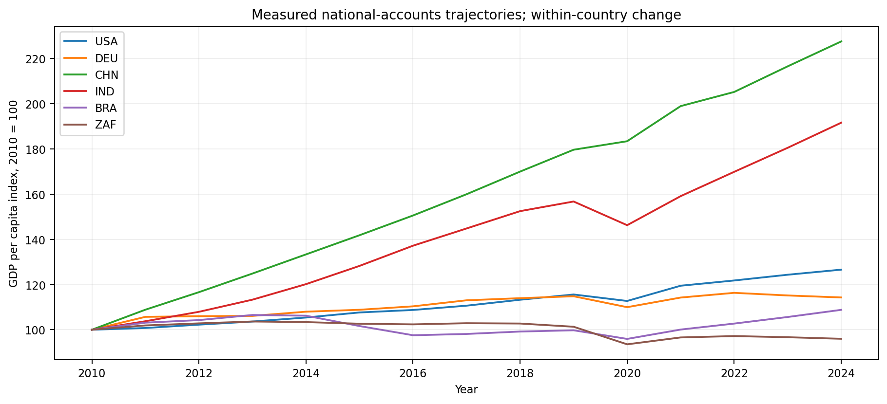
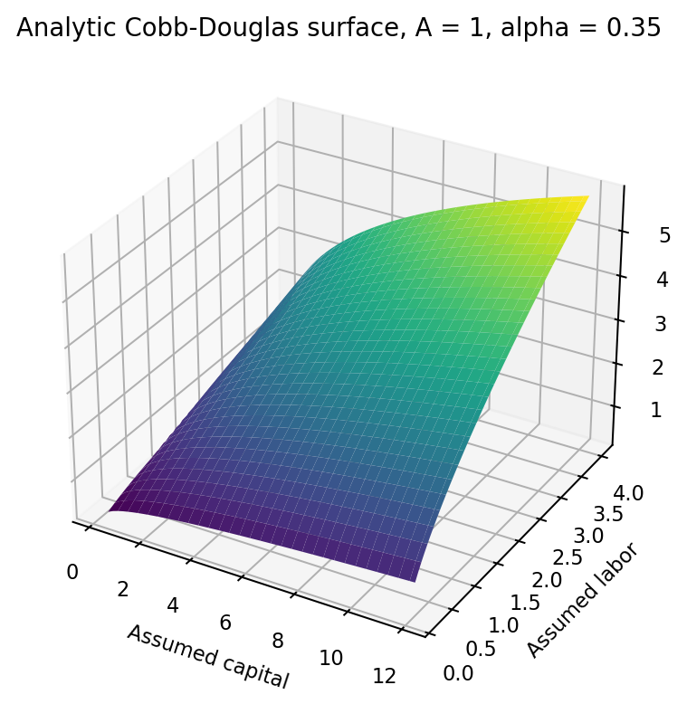

Magnum Economicus: Computation Munster
Michael Emanuel Glover · Developed in dialogue with Codex · 4 October 2026
A mathematical inquiry into prosperity, with measured World Bank GDP and Gini series for six countries and separately labeled synthetic allocation scenarios.
From the manuscript
I want prosperity to travel from shore to shore. I want the production of useful things to become the experience of a better life: time with family, a stable home, meaningful work, care in illness and room for intellectual and creative effort. An economy deserves examination at the point where its totals become someone's circumstances.

